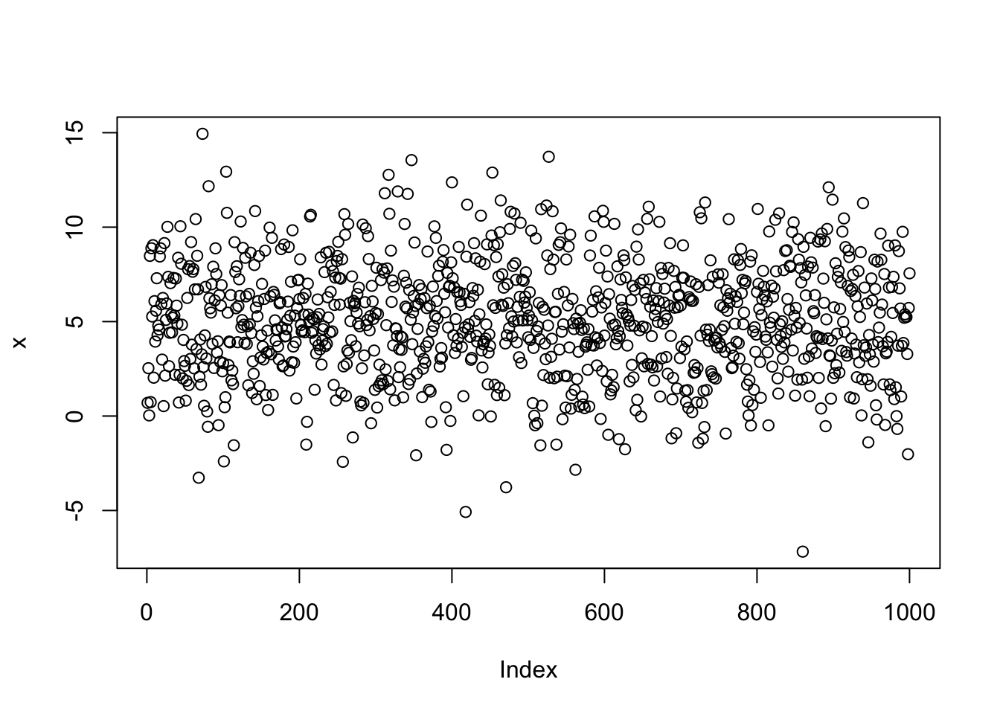
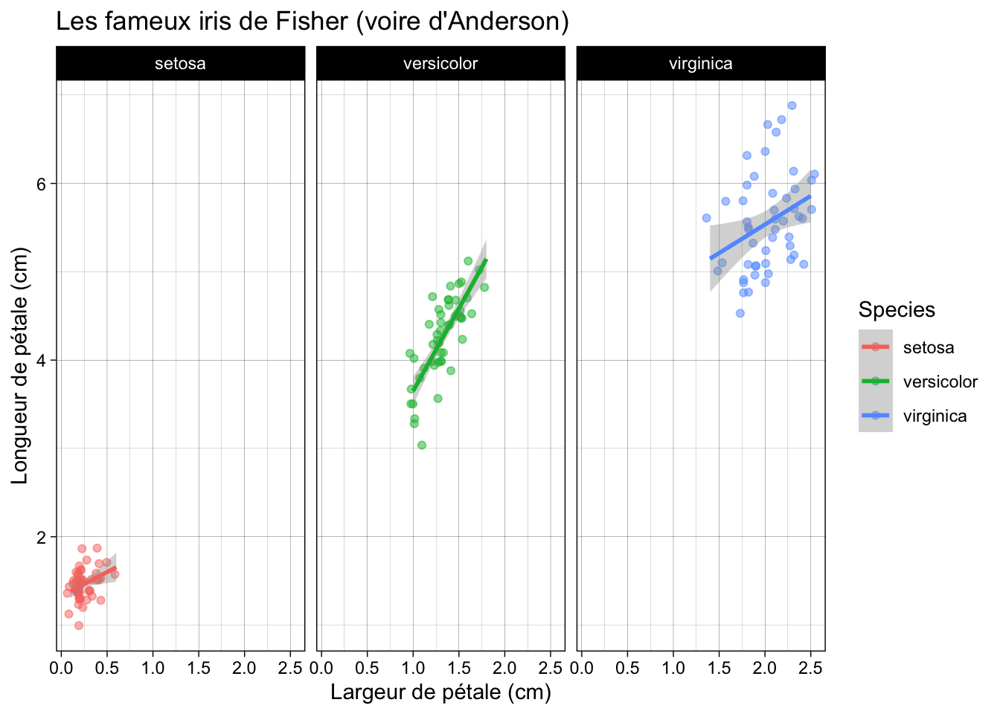
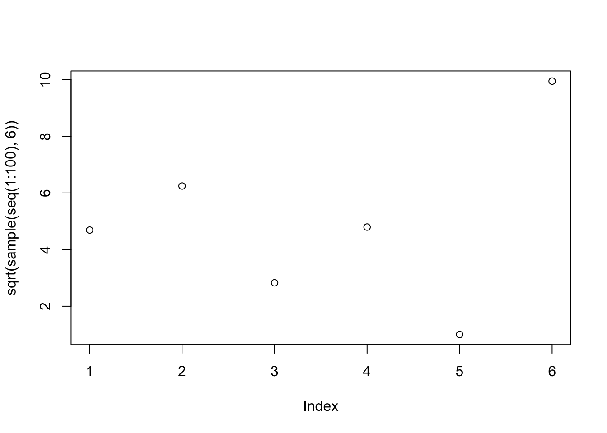

plop <- 3
plop^2[1] 9En premier lieu, R est une calculette. Vous pouvez copier-coller les blocs de code directement dans votre console R :
# back to school
1+2[1] 3
3-4[1] -1
2/3[1] 0.6666667
2*2[1] 4
# beyond +, -, /, *
2^4 [1] 16
sqrt(9) # equivalent to 9^(1/2)[1] 3
7%%3[1] 1
# precedence rules apply
(1.5-2)*4[1] -2
1.5-2*4[1] -6.5
Tous les opérateurs arithmétiques courants sont disponibles :
+, -, *, / pour l’arithmétique de base^ pour élever au carré et sqrt pour la racine carrée%% pour le modulo, etc.Vous venez d’utiliser - peut-être sans le savoir -, votre première fonction : sqrt, pour square root. Les fonctions ont souvent des noms explicites et sont, généralement, suivies de parenthèses dans lesquelles glisser une ou des valeurs.
En réalité, toutes les opérations ci-dessus sont des fonctions, y compris un banal +1. Nous y reviendrons mais cela nous vaut la première maxime de sagesse populaire à garder dans un coin de la tête :
En R, tout est fonction.
Vous pouvez également utiliser des parenthèses pour “emboiter” des opérations dans le bon ordre. Sans parenthèses, les règles de précédence2 classiques s’appliquent comme dans l’exemple ci-dessus : une multiplication sera calculée avant une addition.
Comme on pouvait s’en douter, R a une mémoire et c’est donc plus qu’une calculette, c’est une calculatrice.
Pour stocker une valeur dans une variable nous utilisons l’opérateur d’assignation : <-3
plop <- 3
plop^2[1] 9D’autres opérateurs d’assignation existent (->, =, <<-, etc.) mais je vous conseille - calmement mais fermement - de vous en tenir au bon vieux <-4.
Naturellement, si vous assignez une nouvelle valeur à une variable, celle-ci est remplacée :
plop <- 2
plop+3[1] 5Et bien entendu vous pouvez combiner les variables :
plip <- 7
plop*plip[1] 14Vous pouvez lister les variables existantes avec la fonction ls(). L’onglet “Environnement” dans RStudio permet aussi de les visualiser, plus convivialement et de façon plus détaillée.
Pour afficher la valeur d’une variable, et plus généralement d’un objet, il suffit de taper son nom dans la console et d’appuyer sur <Entrée>. En coulisses, R appelle alors automatiquement la fonction print.
R a tendance à faire beaucoup de choses en coulisses. Dans l’ensemble, cela se traduit par un caractère raisonnablement intuitif pour vous. Mais si une opération aussi naturelle qu’une assignation est une hérésie majeure pour un esprit informaticien orthodoxe, habitué à déclarer une variable et son type avant d’y assigner une valeur.
Mal nommer les choses c’est ajouter au malheur du monde – Camus
À propos du nommage de vos variables, soyez explicites mais compacts et évitez : les caractères spéciaux, les majuscules, les points (utilisez _) et les noms réservés comme pi. Ici aussi, l’anglais aide bien.
# good names
mod1
mod1_spain
N_perm
# bad names
my.model # . is for methods
MY_MODEL # calm down
My_Model # Camel Case works but not favoured
my_model_after_lda_a_and_data_subset2_flavourB # headaches and typos garanteed
# invalid or error-prone names
34_data
pi <- 4 # works but very bad idea
print <- 2 # same
&italyCe qui nous amène à une deuxième maxime populaire:
There are only two hard things in Computer Science: cache invalidation and naming things. – Phil Karlton
Pour assigner plus d’une valeur à une variable, la fonction c, pour concatenate, est votre amie :
toto <- c(1, 2, 3, 4, 5)
toto*2[1] 2 4 6 8 10Jusqu’ici toutes les variables assignées étaient des scalaires, c’est à dire des variables ne comprenant qu’une valeur. toto n’est pas un scalaire mais un vecteur de nombres, qui peut s’écrire en ligne, c’est à dire en une seule et unique dimension. Je pose ça là, nous y reviendrons bien vite.
Quelques fonctions bien utiles pour visualiser et décrire des variables en R :
length(toto) [1] 5head(toto, 2) # show the first 2 values[1] 1 2tail(toto, 3) # show the last 3 values[1] 3 4 5Nous voyons que certaines fonctions acceptent plus d’une seule valeur au sein de leurs parenthèses : on parle d’argument. Quand plus d’un seul argument est passé à une fonction, on les sépare par des virgules. Certaines fonctions peuvent/doivent aussi être appelées à vide, comme on l’a vu avec ls().
Vous m’avez vu (me) taper “à la main”, des séries de nombres telles que c(1, 2, 3, 4, 5). Même l’esprit le plus endormi constatera une certaine régularité dans cette séquence des premiers entiers naturels. Jusqu’à 5, on peut imaginer - et encore -, la taper à la main, mais imaginons que nous ayons besoin d’aller jusqu’à 100 ou même à 37427. Doit bien y avoir quelqu’un·e qui a pensé à une fonction pour faire ça non ? Ceci nous amène à une double maxime, peut-être les deux plus importantes de toute cette formation.
Si tu penses que tu es en train de faire quelque chose de répétitif et/ou stupide, il existe à coup sûr une façon plus intelligente de faire
De façon plus compacte :
Un·e bon·ne programmeur·se est une grosse feignasse
R possède toutes les fonctions dont on peut rêver pour générer séquences régulières et nombres aléatoires. Commençons par les séquences régulières et la versatile fonction seq qui prend au minimum deux arguments pour le point de départ et le point d’arrivée :
seq(1, 10) [1] 1 2 3 4 5 6 7 8 9 10Générér une séquence d’entiers naturels est une opération si banale en programmation que l’on peut faire encore pus court avec l’opérateur ::
1:5[1] 1 2 3 4 5-1:4[1] -1 0 1 2 3 4De la même façon, vous pouvez répéter une ou des valeurs avec rep :
tonton <- 1:5
rep(tonton, 2) [1] 1 2 3 4 5 1 2 3 4 5rep(tonton, each=3) [1] 1 1 1 2 2 2 3 3 3 4 4 4 5 5 5À ce point de votre existence, vous devez vous poser les questions suivantes :
Vous vous posez les bonnes questions et il est temps de faire un interlude, et non des moindres, l’interlude : ?
Les fonctions sont généralement abordées plus tard mais je crois non seulement en vous mais aussi qu’elles doivent être démystifiées précocément.
Les fonctions sont des unités de code qui font quelque chose d’utile. Le plus souvent on envoie une valeur et on en récupère une autre. sqrt() par exemple renvoie la racine carrée de la valeur passée en argument.
Les arguments, séparés par des virgules, définissent les “options” de la fonction concernée. Une fonction peut avoir zéro, un, plusieurs et même un nombre indéfini d’argument.
function
Vous pouvez définir vos propres fonctions avec la fonction function. On va encapsuler une portion de code entre des accolades { et la nommer. Définissons une fonction qui ajoute 3 à un argument que l’on va appeller x (vous pouvez essayer avec y ou toto :
plus3 <- function(x) {
x+3
}
plus3(5)[1] 8plus3(1:3)[1] 4 5 6Les fonctions permettent de ne pas copier-coller bêtement du code, de dupliquer des lignes. À terme, cela vous permettra d’avoir du code non dupliqué, moins propice à des erreurs de frappes. Aussi, si vous changez d’avis, vous pourrez changer la définition de fonction et, chaque fois qu’elle sera appelée en aval, le nouveau comportement sera appliqué. Nous reviendrons sur ces bonnes pratiques à la toute fin de cette formation.
La valeur x ci-dessus, dans la définition de fonction, est une variable utilisée uniquement dans l’environnement de la fonction plus3. Un environnement est un espace de travail mémoire isolé du reste du monde et qui n’existe que durant l’exécution de la fonction.
Autrement dit, si la variable x est déja assignée dans l’environnement global, c’est à dire en dehors de la fonction, dans la console si on veut, et bien ce x global ne sera ni modifié, ni même utilisé. Un exemple :
x <- 45
plus3(5)[1] 8Naturellement vous pouvez tout de même utiliser votre x global comme argument de la fonction plus3. Ce x global va être utilisé localement par la fonction puis vous être retourné :
plus3(x)[1] 48?
Toute fonction déjà disponible en R ou un package a forcément une page d’aide dédiée à laquelle on accède avec : ?nom_de_la_fonction. Revenons à notre fonction seq bien pratique pour créer des séquences régulières. En tapant ?seq on accède au contenu suivant :
Sequence Generation
Description
Generate regular sequences. seq is a standard generic with a default method. seq.int is a primitive which can be much faster but has a few restrictions. seq_along and seq_len are very fast primitives for two common cases.
## Default S3 method:
seq(from = 1, to = 1, by = ((to - from)/(length.out - 1)),
length.out = NULL, along.with = NULL, ...)
seq.int(from, to, by, length.out, along.with, ...)
seq_along(along.with)
seq_len(length.out)
Arguments
[...]
Details
[...]
Value
[...]
See also
[...]
Examples
[...]
Toutes les pages d’aides ont la même structure, et les sections suivantes :
seq. Ces fonctions peuvent être des variantes avec des noms différents ou des méthodes c’est à dire des fonctions au comportement différent selon le type d’objet sur lequel elles opèrent.example("nom_de_la_fonction"). Vous pouvez essayer example("plot") par exemple.seq, on est dans le package base dont toutes les autres fonctions sont indexées dans le lien “Index”.Certaines pages d’aide, surtout pour le langage lui-même, sont plutôt des résumés du fonctionnement et sont un peu moins intuitives à trouver, par exemple ?Arithmetic, ?Special, Syntax. D’autres fonctions, par exemple pour les opérateurs, doivent être encadrées de guillemets arrières (`), par exemple ?`+` ou la mise en abyme de ?`?`. Enfin, il existe d’autres ressources comme les “vignettes”, plus conviviales, surtout pour les packages les plus récents. Nous y reviendrons.
Les pages d’aide sont souvent compactes et obscures mais l’information que vous cherchez est probablement là. On apprend beaucoup à lire ces pages d’aide même si à première vue cette littérature n’est guère attrayante.
Enfin, la variante ??(quoiquoiquoi), raccourci de help.search("quoiquoiquoi") permet de chercher toutes les occurences de quoiquoiquoi dans toutes les pages d’aide de R.
Après avoir consulté ?seq on peut par exemple préciser le point de départ (from), le point d’arrivée (to), le pas (by) et la longueur totale du vecteur à créer (length.out).
Vous constaterez que from est défini avec une valeur par défaut (from=1). Ainsi, si vous omettez sa valeur et ne spécifiez que to, from prendra sa valeur par défaut. Ces deux commandes sont donc équivalentes :
Vous pouvez également abréger le nom des arguments, moyennant que l’abbréviation soit univoque, c’est à dire que le nom de l’argument que vous abrégez ne soit pas identique à celui d’un autre argument. Ainsi from et length.out peuvent être abrégés en fr et length:
seq(fr=0, to=2, length=5)[1] 0.0 0.5 1.0 1.5 2.0Ce n’est jamais une bonne idée mais si vous utilisez le nom complet ou une abbréviation des arguments vous pouvez changer leur ordre. Ainsi seq(length=5, to=2, fr=0) sera équivalent à la commande précédente.
Vous pouvez même omettre le nom des arguments comme on l’a fait dans les sections précédentes sans le mentionner. Dans ce cas, les arguments sont passés positionnellement et doivent être renseignés dans l’ordre tel que défini dans la section ‘Usage’ de leur documentation:
seq(-3, 4, 12)[1] -3toto <- 1:5
toto*3[1] 3 6 9 12 15Il n’aura pas échappé à votre sagacité que dans le précédent exemple, ou une multiplicatio est opérée entre deux objets de tailles différentes (cinq valeurs et une seule), R vous a compris et a multiplié chaque élément de toto par 3.
C’est l’idée, omniprésente, de recyclage. Ça ne parait pas grand chose mais c’est souvent bien pratique et, hélas, quelques fois glissant. Par exemple, si vous multipliez deux vecteurs non-conformes, c’est à dire ni de même longueur, ni multiples l’un de l’autre, des effets indésirables peuvent se manifester. Ou pire encore, rester cachés.
Warning in toto * tata: longer object length is not a multiple of shorter object
length[1] 5 8 9 20De nos jours, R a tendance à émettre des Warnings quand un recyclage exotique est impliqué. Lisez les messages et autres warnings ! Celui-ci est plutôt explicite mais si vous n’y comprenez goutte, copiez-collez le message dans un moteur de recherche.
[ : saisir et changer des valeursIndexer une ou des valeurs c’est sélectionner un sous-ensemble de valeurs dans une variable pour en faire quelque chose.
L’opérateur d’indexation est le crochet droit : [, qui tel Dupont et Dupond vont par paires. À gauche du crochet, la variable; à l’intérieur l’indice ou les indices.
tutu <- c(7, 12, 2, 5, 4)
tutu[1][1] 7tutu[3][1] 2tutu[length(tutu)] # take the last value of tutu, no matter tutu' length[1] 4tutu[c(2, 4)][1] 12 5L’indexation peut se combiner avec l’assignation si on ne veut pas seulement saisir les données mais en faire quelque chose :
tutu[1] 7 12 2 5 4[1] 7 -1 -3 5 4tutu[c(2, 3)] <- 0.5 # indexing, assignation and recycling combined!
tutu[1] 7.0 0.5 0.5 5.0 4.0Ce type d’indexation est dit “positive” : l’indice réfère aux positions que l’on veut.
Bien pratique, l’opération d’indexation “négative” sélectionne ce que l’on ne veut pas.
tutu[1] 7.0 0.5 0.5 5.0 4.0tutu[-1][1] 0.5 0.5 5.0 4.0tutu[-c(1, 3)] <- pi
tutu[1] 7.000000 3.141593 0.500000 3.141593 3.141593Et comme vous vous en doutiez, on peut également utiliser une variable pour indexer :
Le concept d’indexation est absolument central en R, et en programmation en général.
L’indexation peut varier à la marge avec des indices dans plusieurs dimensions comme nous le verrons plus loin (iris[2, 3]), voire même des doubles crochets ([[), mais le comportement présenté ici reste invariable. Youpi !
L’indexation est une belle occasion de parler des opérateurs de comparaison, très utiles pour filter vos données. L’idée est qu’on teste d’abord une condition dont on peut se servir pour indexer
tonton <- c(4, 8, 2, 9, 1, 3, 5)
test <- tonton < 5 # tests a condition
test[1] TRUE FALSE TRUE FALSE TRUE TRUE FALSEwhich(test) # returns indices of TRUE[1] 1 3 5 6# this can be used to index
tonton[which(test)][1] 4 2 1 3# or more directly
tonton[test] # filter elements of tonton lower than 5[1] 4 2 1 3# conditions can be combined
tonton[tonton < 5 & tonton >=2] # same with lower than 5 AND higher or equal to 2[1] 4 2 3tata <- c(7:1)
tonton[tata %in% c(3, 4, 5)] # takes the elements of tonton for which those of that are in 3:5[1] 2 9 1Voilà une liste de tous les opérateurs de comparaison (?Comparison) :
| opérateur | signification |
|---|---|
< |
strictement inférieur |
<= |
inférieur ou égal |
> |
strictement supérieur |
>= |
supérieur ou égal |
== |
égal |
!= |
différent |
%in% |
dans l’ensemble |
Et à y être celle pour les opérateurs logiques (?Logic) sur lesquels nous reviendrons :
| opérateur | signification |
|---|---|
! |
NOT |
& |
AND (élément par élément) |
&& |
AND |
| |
OR (élément par élément) |
|| |
OR |
xor(x, y) |
OR (exclusif) |
Parfois on peut également avoir besoin de any, all5.
class
Accrochez-vous à votre voisin·e, nous abordons un concept clé. Jusqu’ici nous n’avons manipulé que des nombres, avec ou sans assignation à une variable. D’autres classes d’objets existent en R.
On peut accéder à la classe d’un vecteur avec la fonction class. On voit que les chaînes de caractères sont des character pour R:
class(toto)[1] "numeric"Imaginons que nous mesurions des individus et que nous enregistrions leurs prénoms, sexe, stature et si, oui ou non, ils ont subi une formation à R. Ces quatres variables auront des natures différents :
prenom : sera plutôt des lettresstature : sera un nombre décrivant leur taillesexe : sera une étiquette pouvant prendre une et une seule des valeurs suivantes {femme/homme/autre}
formation : sera un descripteur de type vrai/faux que l’on traduira en TRUE/FALSE.Nous avons déja enregistré trois individus :
prenom stature genre formation
Hildegarde 178 femme TRUE
Jean-Jacques 163 homme FALSE
Victor 184 autre TRUEcharacter
Tentons de créer la première variable, c’est à dire la première colonne, à la main :
prenom <- c("Hildegarde", "Jean-Jacques", "Victor")
prenom[1] "Hildegarde" "Jean-Jacques" "Victor" R ne fait pas d’histoires et nous a crée un vecteur de chaînes de caractères !
numeric
Créons maintenant le vecteur stature, on sait faire :
Tous les vecteurs que nous avons crée jusqu’ici, prenom mis à part, était donc des numeric. Précisions que des variantes de numeric existent : double, integer, etc. mais vous n’aurez peut être jamais à vous en soucier.
factor
La colonne genre est un peu particulière puisque elle est une chaîne de caractères mais elle ne peut prendre que des valeurs définies, à savoir une et une seule valeur de l’ensemble : {homme, femme, autre}. La classe factor est là pour ça et la fonction factor permet de créer notre variable sexe :
[1] "factor"genre[1] femme homme autre
Levels: autre femme hommeVotre œil aiguisé aura détecté deux différences par rapport à prenom : l’absence de guillemets autour de chaque valeur et une ligne supplémentaire qui indique les valeurs possibles, les levels de ce vecteur.
Petite digression : les facteurs en R sont très pratiques mais assez piégeux. Nous aurons l’occasion d’y revenir mais avant ça, évacuons les dernier·e·s informaticien·ne·s pur sang de la salle. Imaginons qu’un nouveau level, une nouvelle catégorie, doive être créée pour la variable genre, disons licorne. Tentons l’opération candidement :
Malédiction (apparente)6 que nous expliquerons plus tard.
logical
Laissons reposer les facteurs pour l’instant et continuons notre création de variable avec la colonne formation:
Voici une classe très utile, les logical, souvent issus de tests et de comparaisons logiques, comme survolé précédemmet par exemple :
stature > 180[1] FALSE FALSE TRUENous avons donc crée nos quatre colonnes :
prenom[1] "Hildegarde" "Jean-Jacques" "Victor" stature[1] 178 163 184genre[1] femme homme autre
Levels: autre femme hommeformation[1] TRUE FALSE TRUENous avons vu autant de classes différentes (character, numeric, factor, logical respectivement) et, bonne nouvelle, on a quasiment fait le tour des classes ! Il nous en reste deux, très voisines : list et data.frame.
list
Une liste est un vecteur dont les éléments peuvent être de classes et de longueurs différentes, dont d’autres listes. Autrement dit, c’est la structure de données universelle en R :
$toto
[1] "A"
$tata
[1] 1 3list(prenom, stature)[[1]]
[1] "Hildegarde" "Jean-Jacques" "Victor"
[[2]]
[1] 178 163 184Vous pouvez comparer le résultat à c(prenom, stature). Observez aussi au passage les doubles crochets droits ([[), dont vous n’aurez bien plus peur.
data.frame
Un type de liste bien pratique, devenu archi central en R moderne, est le data.frame qui est une liste dont la double particularité est que tous ses éléments sont nommés et de même longueur. Une façon un peu alambiquée de dire qu’il nous aura fallu tout cela pour réinventer en R le tableau excel !7. Nous y reviendrons abondamment.
Comme vous pouvez vous en douter, personne n’importe les données comme cela, on préférera lire directement une table .csv ou .xlsx. Minute papillon, on y vient.
data <- data.frame(prenom=prenom,
stature=stature,
genre=genre,
formation=formation)
data prenom stature genre formation
1 Hildegarde 178 femme TRUE
2 Jean-Jacques 163 homme FALSE
3 Victor 184 autre TRUEclass(data)[1] "data.frame"is.* et as.*
Les fonctions is.* permettent de tester les classes :
Et les fonctions as.* permettent de convertir les classes, lorsque la conversion est pertinente :
as.factor(prenom)[1] Hildegarde Jean-Jacques Victor
Levels: Hildegarde Jean-Jacques Victoras.character(genre)[1] "femme" "homme" "autre"[,
Revenons à notre data.frame data, un objet en deux dimensions : il possède des lignes et des colonnes. L’indexation vue précédemment sur des vecteurs, des objets en une seule dimension, fonctionne dans le même esprit mais il nous faut renseigner les indices pour chaque dimension. Si l’un des indices n’est pas renseigné, toutes les positions concernées sont retournées mais il ne faut pas oublier pour autant la virgule !
Par convention la première dimension est celle des lignes, la deuxième celle des colonnes. Quelques exemples ci-dessous qui ne font qu’extraire les données. Nous pourrions aussi les modifier avec l’opérateur d’assignation <- comme vu précédemment.
data[1, ] # first row prenom stature genre formation
1 Hildegarde 178 femme TRUEdata[, 1] # first column[1] "Hildegarde" "Jean-Jacques" "Victor" data[-2, ] # everything but the second row prenom stature genre formation
1 Hildegarde 178 femme TRUE
3 Victor 184 autre TRUEdata[c(1, 3), -3] # first and third row, all columns but the third prenom stature formation
1 Hildegarde 178 TRUE
3 Victor 184 TRUEVous aurez noté qu’en ne sélectionnant qu’une colonne, par exemple data[, 1] ci-dessus, on perd la nature de data.frame pour revenir à la classe d’origine de la colonne. Souvent pratique, parfois glissant. Pour ne pas perdre la classe d’origine, il suffit d’ajouter drop=FALSE à votre opération d’indexation, après tous les indices :
data[, 2, drop=FALSE] stature
1 178
2 163
3 184Les colonnes uniques peuvent aussi se sélectionner avec l’opérateur $ qui permet d’accéder à un élément de liste, pourvu qu’il soit nommé. Les data.frames étant des listes nommées, cela fonctionne :
data$stature[1] 178 163 184Les doubles crochets droits [[ permettent eux aussi de sélectionner positionnellement, ou nominativement, l’élément de liste concerné. Les deux commandes ci-dessous seront équivalentes :
data[[3]][1] femme homme autre
Levels: autre femme hommedata[["genre"]][1] femme homme autre
Levels: autre femme homme[ versus [[
L’indexation avec une simple ou une double paire de crochets est souvent source d’incompréhension d’autant que sur des vecteurs le résultat est le même :
toto <- 5:3
toto[1] 5 4 3toto[2][1] 4toto[[2]][1] 4Gardez à l’esprit que la double paire de crochets droits ([[) ne s’utilise que sur des listes (data.frame y compris donc).
Pour expliquer simplement la différence entre [ et [[, disons qu’une liste est un train de marchandise sans locomotive avec un ou plusieurs wagons.
[ permet de sélectionner un wagon, le résultat est toujours un train, certes minimaliste
[[ permet de sélectionner le contenu du wagon qui n’est donc plus un train mais une vache, une palette ou des voyageurs :tata <- list(wagon1="a", wagon2=1:3)
# [ picks a list element
tata[2]$wagon2
[1] 1 2 3class(tata[2])[1] "list"# [[ picks a list element AND drops the list
tata[[2]][1] 1 2 3class(tata[[2]])[1] "integer"Notons que $ est équivalent à [[:
tata$wagon2[1] 1 2 3matrix
Par souci de complétude, mentionnons les matrices qui sont des tableaux rectangulaires de nombres. Elles se créent avec la fonction matrix et en spécifiant les valeurs de remplissage et le nombre de lignes et/ou de colonnes :
Les matrix et les data.frame possèdent de nombreux points communs. On peut notamment accéder à leurs dimensions, noms de lignes et colonnes avec les mêmes fonctions :
Une opération courante sur des matrices consiste à faire des calculs marginaux, par exemple calculer la somme par colonnes. La famille apply permet ce type de calcul. On va renseigner trois arguments (voir ?apply et ses exemples) : l’objet sur lequel travailler; la dimension sur laquelle calculer (1 pour les lignes, 2 pour les colonnes); et enfin la fonction à appliquer, sans parenthèses :
apply(m, 2, sum)[1] 4.0 15.2 7.0array
Par souci de complétude, l’idée de matrice se généralise dans des dimensions supérieures à 2. Pour le dire autrement, une matrix est un array à deux dimensions.
Les array se créent dans le même esprit : les valeurs de remplissage d’abord, puis on précise les dimensions. Ci-dessous, un array de deux tranches de matrices de 2x3.
, , 1
[,1] [,2] [,3]
[1,] 1 3 5
[2,] 2 4 6
, , 2
[,1] [,2] [,3]
[1,] 7 9 11
[2,] 8 10 12L’indexation fonctionne ici aussi. Par exemple si l’on veut la valeur de la première ligne, troisième colonne, deuxième tranche :
a[1, 3, 2][1] 11numeric
Quelques fonctions utiles pour décrire des vecteurs numériques (numeric) :
factor
f1 <- factor(c("apple", "banana", "banana", "pear", "grape", "grape"))
f2 <- factor(c("yellow", "yellow", "yellow", "green", "red", "green"))
length(f1) # length
levels(f1) # levels, as character
nlevels(f1) # number of levels, shortcut for length(level(f1))
table(f1) # count occurences
table(f1, f2) # cross-tabulate factors[1] 6
[1] "apple" "banana" "grape" "pear"
[1] 4
f1
apple banana grape pear
1 2 2 1
f2
f1 green red yellow
apple 0 0 1
banana 0 0 2
grape 1 1 0
pear 1 0 0character
bla1 <- "tonton"
bla2 <- "tata"
nchar(bla1) # count characters
paste(bla1, bla2, sep=" et ") # see also paste0
toupper(bla1) # convert to upper case. see also tolower()
gsub("o", "i", bla1) # replace all 'o' with 'i' in bla1. see ?grep
substr(bla1, 2, 4) # character from positions 2 to 4
abbreviate(bla1) # abbreviate[1] 6
[1] "tonton et tata"
[1] "TONTON"
[1] "tintin"
[1] "ont"
tonton
"tntn" Les derniers exemples montrent des manipulations de chaînes de caractères. Le package stringr remplace avantageusement ces approches “historiques”. Nous y reviendrons.
data.frame
dim(data)
nrow(data)
ncol(data) # equivalent to length(data)
summary(data) # a summary, column-wise
head(data) # show only the first rows
tail(data) # show only the last rows
# View(data) # show an interactive viewer for your data.frame
str(data) # show the structure of your data.frame[1] 3 4
[1] 3
[1] 4
prenom stature genre formation
Length:3 Min. :163.0 autre:1 Mode :logical
Class :character 1st Qu.:170.5 femme:1 FALSE:1
Mode :character Median :178.0 homme:1 TRUE :2
Mean :175.0
3rd Qu.:181.0
Max. :184.0
prenom stature genre formation
1 Hildegarde 178 femme TRUE
2 Jean-Jacques 163 homme FALSE
3 Victor 184 autre TRUE
prenom stature genre formation
1 Hildegarde 178 femme TRUE
2 Jean-Jacques 163 homme FALSE
3 Victor 184 autre TRUE
'data.frame': 3 obs. of 4 variables:
$ prenom : chr "Hildegarde" "Jean-Jacques" "Victor"
$ stature : num 178 163 184
$ genre : Factor w/ 3 levels "autre","femme",..: 2 3 1
$ formation: logi TRUE FALSE TRUEgraphics:::plot.data.frame
La fonction sample permet d’échantillonner au sein d’un vecteur existant. Vous devenz préciser ce vecteur, puis le nombre de tirages à effectuer, avec ou sans remise.
Si vous n’avez pas de dé, en voilà un :
sample(1:6, size=1)[1] 6Avec size=3, replace=TRUE vous pouvez même jouer au 421. Ou encore générer un tirage de loto sans les boules qui s’agitent :
sample(1:49, size=6, replace=FALSE)[1] 9 47 36 14 4 34Chaque élément du vecteur a autant de chance de sortir qu’un autre. Si vous préférez le scrabble, vous pouvez aussi utiliser sample mais en calibrant l’argument probs sur la fréquence des lettres dans la langue française. N’allez donc pas vous taper l’alphabet à la main, jeter un oeil à letters et LETTERS.
Au delà des vecteurs existants, vous pouvez générer des nombres aléatoires issus d’une distribution. Toutes les distributions disponibles sont listées dans la bien nommée ?Distriutions.
Ces fonctions sont nommées de la façon suivante {r, p, q, d}nom_abregé_distrib. La première lettre désigne la variante désirée des différentes fonctions pour une distribution donnée, selon que l’on veuille générer des nombres, la densité de probabilité, les quantiles associés, etc.
Pour générer 10 nombres aléatoires compris entre -1 et 1 on peut par exemple :
runif(10, 0, 1) # see ?runif [1] 0.1193610 0.4918118 0.7741212 0.3069952 0.7218488 0.4027434 0.4372506
[8] 0.8760479 0.8498670 0.4134920Dans le même esprit on peut tirer 1000 nombres issus d’une distribution normale de moyenne 5 et d’écart-type 3 avec la commande suivante :
1e3 est la notation dite “ingénieur” parfaitement comprise par R. Ici, on a 1 suivi de 3 zéros, soit 10^3 soit 1000. Vous constaterez également que la moyenne est à peu près de 5 et l’écart type à peu près égal à 3.
Si vous réexécutez cette commande, vous aurez un autre vecteur avec des valeurs différentes mais également à peu près centré sur 5.
Si vous désirez générer des nombres aléatoires certes, mais les mêmes, par exemple d’une session à l’autre ou (c’est la même chose) sur l’ordinateur de votre collègue, c’est possible avec la fonction set.seed.
Décrire un vecteur de nombres avec mean et sd mais faire des jolis graphes c’est mieux. La commande plot est la fonction de base pour ce faire :
plot(x)
R a compris que chaque valeur du vecteur x devait être plottée sur l’axe de ordonnées et en a déduit que l’axe des abscisses devait être la série de 1 à 1000. Ici un histogramme serait plus approprié pour décrire la distribution de notre vecteur de nombres aléatoires :
hist(y)
On voit qu’il est bien centré sur 5. Si l’on augmente le nombre de valeurs générées ainsi que le nombres d’intervalles (breaks en anglais), on retrouve une bien belle gaussienne :
Les graphiques de base de R sont un peu surannés depuis l’avènement de gpplot2 que nous verrons en détail plus loin mais ils ont encore leur mot à dire, même s’il ne s’exprimeront pas longuement ici.
Voyons tout de même ce que l’on peut faire avec iris, l’un des nombreux jeux de données livrés avec R8.
head(iris) Sepal.Length Sepal.Width Petal.Length Petal.Width Species
1 5.1 3.5 1.4 0.2 setosa
2 4.9 3.0 1.4 0.2 setosa
3 4.7 3.2 1.3 0.2 setosa
4 4.6 3.1 1.5 0.2 setosa
5 5.0 3.6 1.4 0.2 setosa
6 5.4 3.9 1.7 0.4 setosaplot(Petal.Length~Petal.Width, data=iris, col=Species,
xlab="Largeur de pétale (cm)", ylab="Longueur de pétale (cm)",
main="Les fameux iris de Fisher (voire d'Anderson)")
En petit aguichage ggplot2 voilà ce qu’on peut obtenir dans le même temps :
library(ggplot2)
ggplot(iris) +
aes(x=Petal.Width, y=Petal.Length, col=Species) +
geom_jitter(alpha=0.5) +
geom_smooth(method="lm", formula="y~x") +
facet_grid(~Species) +
xlab("Largeur de pétale (cm)") +
ylab("Longueur de pétale (cm)") +
ggtitle("Les fameux iris de Fisher (voire d'Anderson)") +
theme_linedraw()%>%
Il est peu dire que cet opérateur9 a révolutionné R, lorsqu’il y a été importé, d’abord dans le package magrittr sous sa forme %>%. Il est désormais inclus dans le R de “base” sous sa forme |> mais nous n’utiliserons que la version historique %>%, que je trouve plus lisible, plus facile à taper (<Maj> + <Ctrl/Cmd> + <M> dans RStudio) et parce que les années aidant, je deviens conservateur.
L’idée du pipe est issue de la composition de fonctions en mathématiques. Plutôt que d’écrire :
h(g(f(x))) on peut déplier cet emboitement de fonctions et écrire (h ∘ g ∘ f)(x)
En langage R, plutôt que d’écrire h(g(f(x))) on écrira : x %>% f() %>% g() %>% h()10. Cette écriture est non seulement plus lisible mais elle se lit également de gauche à droite, dans le sens conventionnel de notre partie du monde.
Comparez ces deux lignes pourtant strictement équivalentes:


Les packages du R moderne, en premier lieu ceux du tidyverse en ont fait une idée centrale de leur design et il est peu dire que nous autres mortel·le·s en profitons tous les jours.
<Ctrl> + <L>. Vos objets sont conservés.<Haut> et <Bas>.<Tab>
Le flux classique de travail est le suivant :
Au fur et à mesure de votre avancée, votre script va se remplir. Demain, dans 6 mois, ou sur un autre ordinateur, vous pourrez refaire “tourner” vos analyses et avoir strictement les mêmes résultats. On parle de reproductibilité. Gage de science sérieuse et, pour vous, de sérenité. Pour ces raisons, je vous conseille de ne pas enregistrer votre environnement de travail quand vous fermez R ou RStudio.
Un script peut être un fichier texte ou .R. RStudio gère bien les différents scripts en affichant dans la même fenêtre votre console, vos scripts, vos graphes, etc.
Run > Restart R and run all.source. Bien pratique par exemple pour mettre toutes vos fonctions dans un script et les analyses à proprement parler dans un autre.RStudio a pléthore raccourcis et fonctionnalités bien pratiques par exemple pour formater votre code selon les standards en cours (Code > Reformat Code) ou simplement pour réindenter proprement votre code. L’indentation est le décalage par rapport à la marge gauche du script. Cette indentation est purement esthétique en R, contrairement à Python par exemple. Elle est bien pratique pour sauter une ligne qui serait trop longue, ce qui est déconseillé.
Si vous lisez ces lignes c’est que vous avez survécu jusqu’ici, bravo. Vous avez fait le plus dur, vous parlez déjà R. Le reste est une longue promenade en faux plat qui tourne autour de ces idées. Bien sûr, votre vocabulaire va s’enrichir, votre syntaxe sera de plus en plus concise et vous passerez ainsi de plus en plus de temps à la plage.
Bien sûr, vous aurez envie de mettre le feu à l’ordinateur, votre bureau et l’intégralité du monde open-source. N’en faites rien, asseyez vous en tailleur et méditez la sentence de notre maitre à tou·te·s, Hadley Wickham :
Frustration is typical and temporary
L’échec, l’incompréhension, la frustration sont la matérialisation de l’apprentissage. Restez calmes, gardez votre sang-froid, tapez votre problème dans Google, lisez Stack Overflow et faites vous confiance. Perséverez. Je crois en vous.
essayez donc `+`(1, 2)↩︎
`<-`(toto, 4); toto*2 puisqu’on te dit que tout est fonction !↩︎
L’assignation -> est acceptable dans certains contextes, notamment en combinaison avec un pipe %>%. = est plutôt réservés aux arguments de fonctions ou, éventuellement, à des méta-paramètres en début de script. <<- est en revanche proscrit car il assigne dans l’environnement global. Utilisé dans une fonction, il remplacera dans l’environnement global la valeur de cette variable, si elle existe. Si vous pensez en avoir besoin, c’est généralement (>99.9%) que votre script/fonction est mal fichue.↩︎
%notin% et none n’existent pas en R mais on peut facilement les composer avec !(a %in% b) et !(all(...))↩︎
Il y a encore plus “drôle”: c(genre, 0)*2↩︎
Ne dites à personne que j’ai écrit ça !↩︎
À prononcer à l’anglaise hein : “payepeu”↩︎
Vous pouvez également omettre les parenthèses si vos fonctions sont passées sans argument.↩︎
❤ R pour les gens pressés par Vincent Bonhomme est placé dans le domaine public sous licence CC0 1.0